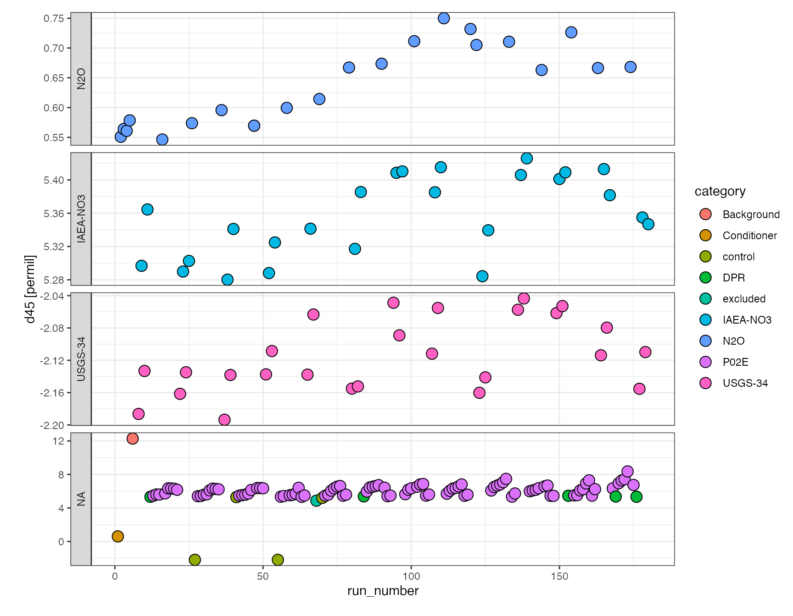

N2O data reduction tutorial
Sebastian Kopf
2021-03-04
Source:vignettes/N2O_data_reduction_tutorial.Rmd
N2O_data_reduction_tutorial.RmdThis tutorial introduces the isorunN2O packages and provides examples of how it works and can be used. Please install isorunN2O following the instructions on GitHub, the newest version of this tutorial can always be loaded up as a vignette directly in R by calling vignette("N2O_data_reduction_tutorial") in the command line.
Loading test data
The package includes an example data set (test_run) to work with for testing and demonstration purposes. Because the original data files would be too big to include, it is stored as the cached compacted data set that the iso_save() command from the isoreader package creates from the raw data files. When you run this on your own data sets, simply change the root_folder to point to where you keep all your data (absolute path or relative to your current working directory), e.g. root_folder <- file.path("MAT", "results") and the run_folders to all the run folders you want to read in (can be one or multiple). The first time you load your own data using isoreader it may take a few minutes (speed it up using the parallel = TRUE parameter) but afterwards it will always be fast because it is already cached. The following data was read using isoreader version 1.3.0.
library(isoreader) root_folder <- system.file("extdata", package = "isorunN2O") run_folders <- "test_run" # could be multiple, e.g. run_folders <- c("run1", "run2") iso_files <- iso_read_continuous_flow(run_folders, root = root_folder)
Raw data
The iso_files variable now holds all your raw data, you can look at the names of all the loaded files by running the following (here only the first 5 for brevity, also note that we’re using the %>% pipe operator to pass output from one function to the next, which might look a little strange at first but makes it more readable further on):
## [1] "MAT25392080_P02E_run02_Conditioner-0000.dxf"
## [2] "MAT25392081_P02E_run02_N2O-0000.dxf"
## [3] "MAT25392082_P02E_run02_N2O-0000.dxf"
## [4] "MAT25392083_P02E_run02_N2O-0000.dxf"
## [5] "MAT25392084_P02E_run02_N2O-0000.dxf"You can use the file names to take a look at specific chromatograms using the functionality provided in the isoprocessor package (version 0.6.11).
library(isoprocessor) iso_files$`MAT25392080_P02E_run02_Conditioner-0000.dxf` %>% iso_plot_continuous_flow_data(color = data, panel = NULL)
Explore
If you’d like to explore the chromatograms (or really any of the data extracted from the raw data files) more, you can visually explore some of the core functionality of isoreader and isoprocessor using the isoviewer (version 0.6.11) graphical user interface with the command below (use the Close button in the GUI to return to the interactive R session):
isoviewer::iso_start_viewer()
Processing
Data processing makes use of generic data table and isotope functionality provided by the dplyr, isoreader and isoprocessor packages as well as N2O specific tools implemented in the isorunN2O package.
Data processing step 1 (first look)
In the first step, parse the file info from the sequence (take a look at what’s available with iso_get_file_info(iso_files)), pull out the peak table from the iso files (with the file info), then focus only the N2O peak (no need for the references), and focus on the main columns we are interested in. Everything is chained together with the pipe %>% operator for better readability.
df.raw <- iso_files %>% # extract all sample information (former parse_file_names) iso_mutate_file_info( folder = basename(dirname(file_path)), date = file_datetime, analysis = Analysis, run_number = parse_integer(Row), # category is the first part of the `Identifier 1` category = extract_word(`Identifier 1`, include_underscore = TRUE, include_dash = TRUE), # name is the full `Identifier 1` value name = `Identifier 1`, # valume information is stored in `Identifier 2` volume = parse_number(`Identifier 2`) ) %>% # aggregate peak table iso_get_vendor_data_table(include_file_info = everything()) %>% # select N2O peak select_N2O_peak( c(360, 370)) %>% # select all relevant columns select_columns(folder:volume, area = `Intensity All`, d45 = `d 45N2O/44N2O`, d46 = `d 46N2O/44N2O`)
## Info: mutating file info for 181 data file(s)## Info: aggregating vendor data table from 181 data file(s), including file info 'everything()'## INFO: 179 N2O peaks found in 181 files (at retention time 360 - 370s), 905 other peaks discarded.## NOTE that no N2O peak was found in the following files (check retention time if there should be one):
## MAT25392086_P02E_run02_LNSW Blank-0000.dxf, MAT25392200_P02E_run02_NO SAMPLE-0000.dxf## INFO: Selecting 10 columns (folder, date, analysis, run_number, category, name, volume, area, d45, d46), discarding 56 (file_id, file_root, file_path, file_subpath, file_datetime, file_size, Row, Peak Center, Check Ref. Dilution, H3 Stability, H3 Factor, AS Sample, AS Method, Identifier 1, Analysis, Comment, Method, measurement_info, MS_integration_time.s, Identifier 2, Nr., Start, Rt, End, Ampl 44, Ampl 45, Ampl 46, BGD 44, BGD 45, BGD 46, rIntensity 44, rIntensity 45, rIntensity 46, rIntensity All, Intensity 44, Intensity 45, Intensity 46, Intensity All, List First Peak, rR 45N2O/44N2O, rR 46N2O/44N2O, Is Ref.?, R 45N2O/44N2O, Ref. Name, rd 45N2O/44N2O, d 45N2O/44N2O, R 46N2O/44N2O, rd 46N2O/44N2O, d 46N2O/44N2O, R 18O/16O, d 18O/16O, AT% 15N/14N, R 15N/14N, d 15N/14N, AT% 18O/16O, R 17O/16O, d 17O/16O, Rps 46N2O/44N2O, Rps 45N2O/44N2O).Now to get a sense for what the data looks like, let’s look at the first couple of rows. To look at the complete data frame, you can always call View(df.raw) or double click on the name in the Environment tab on the upper right.
df.raw %>% head(n=5)
## # A tibble: 5 x 10
## folder date analysis run_number category name volume area
## <chr> <dttm> <chr> <int> <chr> <chr> <dbl> <dbl[Vs>
## 1 test_… 2015-03-03 10:55:03 MAT2539… 1 Conditi… Cond… NA 80.65752
## 2 test_… 2015-03-03 11:04:42 MAT2539… 2 N2O N2O 20 82.40901
## 3 test_… 2015-03-03 11:14:20 MAT2539… 3 N2O N2O 20 81.97664
## 4 test_… 2015-03-03 11:23:58 MAT2539… 4 N2O N2O 20 82.40488
## 5 test_… 2015-03-03 11:33:36 MAT2539… 5 N2O N2O 20 81.98561
## # … with 2 more variables: d45 <dbl[permil]>, d46 <dbl[permil]>To check the category makeup of your run, make use of some handy dplyr functionality:
## # A tibble: 7 x 2
## category n
## <chr> <int>
## 1 Background 1
## 2 Conditioner 1
## 3 DPR 5
## 4 IAEA-NO3 28
## 5 N2O 22
## 6 P02E 94
## 7 USGS-34 28Additionally, isoprocessor provides convenience functions for inspecting the data including iso_summarize_data_table(). Formatting options for data tables are provided by the function kable from the knitr package, which we’ll use here to get column style output.
df.raw %>% group_by(category) %>% # summarize area, d45 and d46 for each category iso_summarize_data_table(area, d45, d46) %>% # format for easier display knitr::kable()
| category | n | area mean | area sd | d45 mean | d45 sd | d46 mean | d46 sd |
|---|---|---|---|---|---|---|---|
| Background | 1 | 0.2560503 | NA | 12.2815112 | NA | -2.0765722 | NA |
| Conditioner | 1 | 80.6575200 | NA | 0.6003229 | NA | -0.8004934 | NA |
| DPR | 5 | 90.3956770 | 1.378090 | 5.3718510 | 0.0489823 | -3.0800053 | 0.1901865 |
| IAEA-NO3 | 28 | 86.3229634 | 1.234719 | 5.3311431 | 0.1064835 | 19.1541208 | 0.2589260 |
| N2O | 22 | 81.8241760 | 1.899788 | 0.6362417 | 0.0679540 | -0.8060828 | 0.1094067 |
| P02E | 94 | 87.1925131 | 1.143907 | 6.1176044 | 0.5982852 | -2.7215962 | 0.5012561 |
| USGS-34 | 28 | 86.4001330 | 1.257426 | -2.1204132 | 0.0481770 | -31.8621068 | 0.1768753 |
To further hone in on different data groups, simply modify the group_by:
df.raw %>% group_by(category, name) %>% iso_summarize_data_table(area, d45, d46, cutoff = 3)%>% knitr::kable()
| category | name | n | area mean | area sd | d45 mean | d45 sd | d46 mean | d46 sd |
|---|---|---|---|---|---|---|---|---|
| DPR | DPR | 5 | 90.39568 | 1.3780903 | 5.3718510 | 0.0489823 | -3.0800053 | 0.1901865 |
| IAEA-NO3 | IAEA-NO3 35uM | 13 | 86.87103 | 0.9617826 | 5.3319129 | 0.1445695 | 19.1446368 | 0.3419803 |
| IAEA-NO3 | IAEA-NO3 45uM | 13 | 86.02042 | 0.9624278 | 5.3435809 | 0.0535936 | 19.1994459 | 0.1441963 |
| N2O | N2O | 22 | 81.82418 | 1.8997884 | 0.6362417 | 0.0679540 | -0.8060828 | 0.1094067 |
| USGS-34 | USGS-34 35uM | 13 | 87.01429 | 1.1653868 | -2.1001361 | 0.0383784 | -31.7350374 | 0.0802141 |
| USGS-34 | USGS-34 45uM | 13 | 85.66835 | 1.0505273 | -2.1292964 | 0.0480026 | -31.9908451 | 0.1685208 |
For a visual first look at the data, you can use versatile ?iso_plot_data function, which generates a ggplot:
library(ggplot2) df.raw %>% iso_plot_data( x = run_number, y = d45, points = TRUE, # shape = 21 with fill makes data points with black borders shape = 21, fill = category, panel = category ~ . )

or a little bit more elaborate specifying in more detail how to color/fill and panel the overview plot:
df.raw %>% iso_plot_data( x = run_number, y = d45, points = TRUE, size = area, shape = 21, fill = c(type = ifelse(category %in% c("IAEA-NO3", "USGS-34"), name, category)), panel = factor(category, levels = c("N2O", "IAEA-NO3", "USGS-34")) ~ . )

or as an interactive plot (mouse-over information and zooming), which is a little easier for data exploration (make_interactive() makes the last plot interactive by default):
Data processing step 2 (continued)
From the first look it is clear that there are couple of things we need to consider, there is one sample that was marked as questionable during injection (#68) which we’d like to exclude for now, there were also a couple of samples that were controls rather than standards and should go into their own category. Lastly, it appears there is some drift so we will want to evaluate that.
Categories
df.cat <- df.raw %>% change_category(run_number == 68, "excluded") %>% change_category(name %in% c("IAEA-NO3 37 uM ctrl", "USGS-34 37 uM ctrl"), "control")
## INFO: the category of 1 analyses was changed to 'excluded' (by applying criteria 'run_number == 68')## INFO: the category of 4 analyses was changed to 'control' (by applying criteria 'name %in% c("IAEA-NO3 37 uM ctrl", "USGS-34 37 uM ctrl")')Drift correction
The evaluate_drift function provides a number of different strategies for evaluating drift using different correction methods, here we’re trying a polynomial fit (method = "loess") and are correcting with the standards as well as N2O. We also want to see a summary plot of the drift using plot = TRUE (the default), which will plot the drift polynomials on top of the original data (normalized to average isotope values in each group) and the residuals after applying the correction. For details look at the ?evaluate_drift help. The drift correction stores the drift corrected values in d45.drift and d46.drift.
df.drift <- df.cat %>% evaluate_drift( d45, d46, correct = TRUE, plot = TRUE, correct_with = category %in% c("USGS-34", "IAEA-NO3", "N2O"), method = "loess" )
## INFO: 179 N2O analyses drift corrected (new data columns 'd45.drift' & 'd46.drift', and parameter 'p.drift' added)
## Used the 'loess' method with included categories 'N2O, USGS-34, IAEA-NO3'.
## Residual sum of squares: 0.282 (d45), 0.722 (d46)
## Standard deviations in d45/d46 before and after drift correction, by groupings:
## Before: 0.04/0.14 (IAEA-NO3 35uM), 0.05/0.14 (IAEA-NO3 45uM), 0.07/0.11 (N2O), 0.04/0.08 (USGS-34 35uM), 0.05/0.17 (USGS-34 45uM)
## After: 0.03/0.11 (IAEA-NO3 35uM), 0.04/0.11 (IAEA-NO3 45uM), 0.03/0.03 (N2O), 0.04/0.07 (USGS-34 35uM), 0.03/0.12 (USGS-34 45uM)
Let’s take a quick look how we’re doing after drift correction:
df.drift %>% iso_plot_data( x = run_number, y = d45, points = TRUE, shape = 21, fill = category, panel = factor(category, levels = c("N2O", "IAEA-NO3", "USGS-34")) ~ . )

Data processing step 3 (continued)
Now that we’re drift corrected, time to switch to \(\delta^{15}N\) and \(\delta^{18}O\) space and calibrate against our standards.
O17 correction
We’re doing the O17 correction here (instead of before the drift) but it is a matter of discussion whether drift correction or O17 correction should be applied first. The O17 correction introduces new columns d15.raw and d18.raw.
df.O17 <- df.drift %>% correct_N2O_for_17O(d45.drift, d46.drift) %>% # no longer need these columns now that we're in d15 and d18 space select_columns(-d45, -d45.drift, -d46, -d46.drift)
## INFO: 179 N2O analyses were corrected for 17O (new columns 'd15.raw' and 'd18.raw', and parameter 'p.17Ocor' added).
## Correction effects: mean d45 = 4.013 with resulting d15 = 4.322, mean d46 = -3.619 with resulting d18 = -3.711 [permil]
## Correction term constants: k46 = 1.0081, k45 = -0.0157, k17 = -0.0006, k45x45 = -0.0075, k45x17 = -0.0007, k17x17 = 0.0001## INFO: Selecting 12 columns (folder, date, analysis, run_number, category, name, volume, area, p.drift, p.17Ocor, d15.raw, d18.raw), discarding 4 (d45, d46, d45.drift, d46.drift).Calibration
Last steps are calculating the background (see ?calculate_background), calculating concentrations (see ?calculate_concentrations) and then calibrating \(\delta^{15}N\) and \(\delta^{18}O\) (see ?calibrate_d15 and ?calibrate_d18). Note that the background calculation is not currently used for calibration since only multi-point calibration is implemented but it’s a good check to see its value.
df.cal <- df.O17 %>% calculate_background(area) %>% calculate_concentrations(area, volume, conc_pattern = "(\\d+)uM", standards = category %in% c("USGS-34", "IAEA-NO3")) %>% calibrate_d15(d15.raw, standards = c(`USGS-34` = -1.8, `IAEA-NO3` = 4.7)) %>% calibrate_d18(d18.raw, cell_volume = 1.5, standards = c(`USGS-34` = -27.93, `IAEA-NO3` = 25.61))
## INFO: the category of 1 analyses was changed to 'background' (by applying criteria 'name %in% c("background", "Background")')## INFO: bacterial background identified and area stored in parameter column 'p.bgrd': 0.256## INFO: NOx concentrations and injection amounts (new columns 'conc' and 'amount') calculated from 35uM (25x) & 45uM (26x) standards
## Parameter columns mass spec signal 'p.yield' (4.346) and effective 'p.run_size' (19.87) added.## INFO: d15 values calibrated (new columm 'd15.cal') using USGS-34 (-1.8) & IAEA-NO3 (4.7) --> stored in 'p.d15_stds'
## Regression: -0.4+-0.1 (d15/A, p=0.01), NA (1/A, p=NA), 0.434+-0.006 (intercept, p=3e-52)
## Inferred reference gas isotopic composition: -0.434+-0.006 permil (added as 'p.ref_gas_d15')
## Inferred bacterial background area: 0.4+-0.1 (added as 'p.bgrd_area') & isotopic composition: NA permil (added as 'p.bgrd_d15')## INFO: d18 values calibrated (new columm 'd18.cal') using USGS-34 (-27.93) & IAEA-NO3 (25.61) --> stored in 'p.d18_stds'
## Effective concentration dependence of calibration regression taken into account.
## Parameter columns for calibration (measured vs. true * concentration):
## 'p.d18_m_true' (0.897), 'p.d18_m_conc' (-0.195), 'p.d18_m_true:conc' (0.006) and intercept 'p.d18_b' (-3.359) added.Summary
At the end of the data processing, there are a couple of ways to summarize the data, including the iso_summmarize_data_table() introduced earlier (here used to compare the raw vs. calibrated values with different groupings), but also generate_parameter_table, which summarizes all the parameters recorded from the data processing calls:
df.cal %>% group_by(category) %>% iso_summarize_data_table(cutoff = 3, d15.raw, d15.cal, d18.raw, d18.cal) %>% arrange(desc(n)) %>% knitr::kable()
| category | n | d15.cal mean | d15.cal sd | d15.raw mean | d15.raw sd | d18.cal mean | d18.cal sd | d18.raw mean | d18.raw sd |
|---|---|---|---|---|---|---|---|---|---|
| P02E | 94 | 6.0956732 | 0.6094777 | 6.5042718 | 0.6069220 | 2.587674 | 0.5118533 | -2.8477645 | 0.4780328 |
| USGS-34 | 26 | -1.8000000 | 0.0379842 | -1.3582935 | 0.0378249 | -27.930000 | 0.1304666 | -32.0829099 | 0.1622549 |
| IAEA-NO3 | 25 | 4.7000000 | 0.0380504 | 5.1144509 | 0.0378909 | 25.610000 | 0.1095895 | 19.2734467 | 0.1056631 |
| N2O | 22 | 0.2647725 | 0.0318884 | 0.6978211 | 0.0317547 | 3.016624 | 0.0387814 | -0.8080363 | 0.0348689 |
| DPR | 5 | 5.3180632 | 0.0352613 | 5.7299224 | 0.0351135 | 2.246454 | 0.1796061 | -3.2040916 | 0.1761414 |
| control | 4 | 1.3876690 | 3.7297571 | 1.8160091 | 3.7141176 | -1.227081 | 30.7282743 | -6.4466047 | 29.4645749 |
df.cal %>% generate_parameter_table() %>% knitr::kable()
| p.drift | p.17Ocor | p.bgrd | p.run_size | p.yield | p.d15_stds | p.ref_gas_d15 | p.ref_gas_d15.err | p.bgrd_area | p.bgrd_area.err | p.bgrd_d15 | p.bgrd_d15.err | p.d18_stds | p.d18_m_true | p.d18_m_conc | p.d18_m_true:conc | p.d18_b |
|---|---|---|---|---|---|---|---|---|---|---|---|---|---|---|---|---|
| loess (span: 0.75): N2O, USGS-34, IAEA-NO3 | scaling=0.52; ref 17R=0.0003799, 18R=0.0020052, 15N=0.0036782 | 0.2560503 | 19.87353 | 4.345999 | USGS-34 (-1.8) & IAEA-NO3 (4.7) | -0.4341588 | 0.0057633 | 0.362169 | 0.140907 | NA | NA | USGS-34 (-27.93) & IAEA-NO3 (25.61) | 0.896706 | -0.1948884 | 0.0063048 | -3.359054 |
And of course visually, e.g. in an interactive plot with additional mouseover info using the label parameter and iso_format function:
df.cal %>% iso_plot_data( x = run_number, y = d15.cal, points = TRUE, size = amount, shape = 21, fill = c(type = ifelse(category %in% c("IAEA-NO3", "USGS-34"), name, category)), panel = factor(category, levels = c("N2O", "IAEA-NO3", "USGS-34")) ~ ., label = c(info = iso_format( NULL = name, d15 = round(d15.cal, 2), d18 = round(d18.cal, 2), amount = round(amount, 3) )) ) %>% ggplotly(dynamicTicks = TRUE, tooltip = c("fill", "label"))
And some simpler single data plots (using filter from the dplyr pakcage) to look specifically at the samples and DPR control.
df.cal %>% filter(category %in% c("P02E", "DPR")) %>% iso_plot_data( x = run_number, y = c(d15.cal, d18.cal), points = TRUE, shape = 21, fill = c(info = paste(category, panel)) ) %>% ggplotly(dynamicTicks = TRUE)
Additional customization is also possible using ggplot functionality, for example can use the shape parameter for symbol differentiation, and to visualize all the standards’ key values in separate panels, can make use of facet_wrap:
plot <- df.cal %>% filter(category %in% c("IAEA-NO3", "USGS-34")) %>% iso_plot_data( x = run_number, y = c(amount, d15.cal, d18.cal), points = TRUE, shape = name, fill = name, # use multiple shapes, define with scale_shape_manual label = c(info = iso_format( `#` = run_number, d15 = round(d15.cal, 2), d18 = round(d18.cal, 2) )) ) + facet_wrap(panel ~ category, scales = "free", ncol = 2) + scale_shape_manual(values = 21:25) ggplotly(p = plot, dynamicTicks = TRUE, tooltip = c("fill", "label"))
Export data
At any point during the process, if you like to export data as excel, this is easy with iso_export_data_to_excel (here using a couple of filter options in select to skip parameters and raw values, and using arrange to sort the data):
df.cal %>% select(-starts_with("p."), -ends_with(".raw"), -ends_with(".drift"), d15 = d15.cal, d18 = d18.cal) %>% arrange(category, name) %>% iso_export_data_to_excel(filepath = "export.xlsx")
## Info: exporting datasets 'Sheet1' into Excel file 'export.xlsx'... finished.